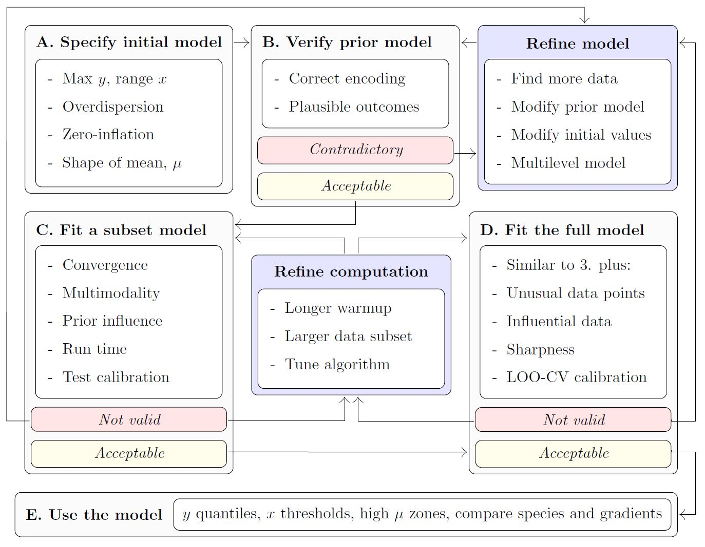
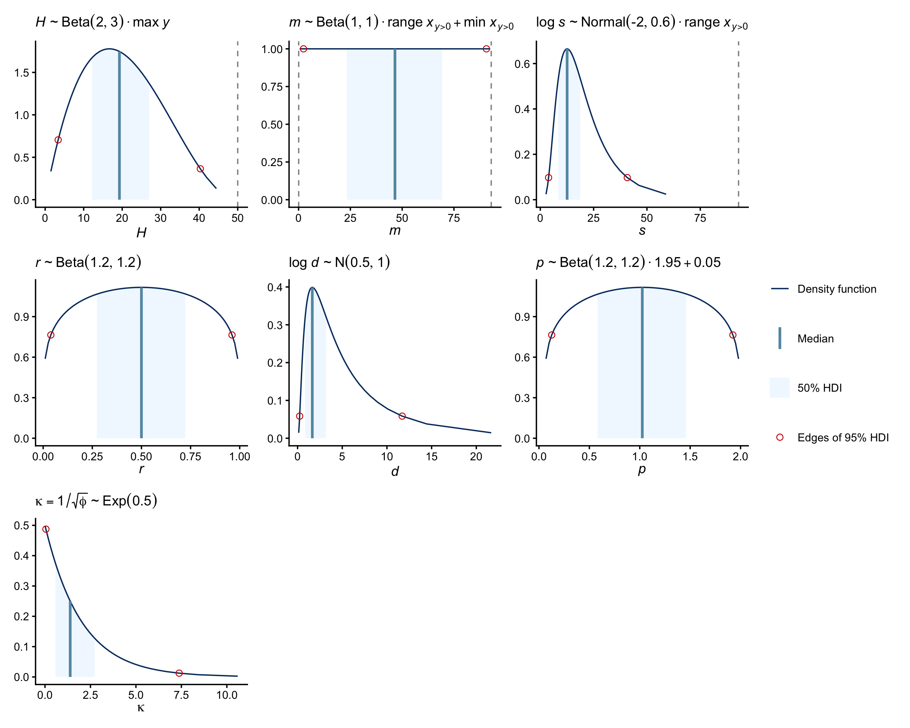
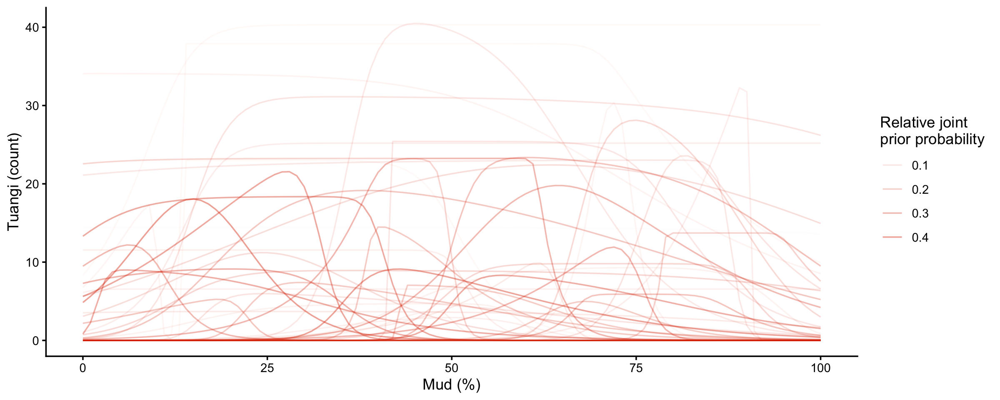
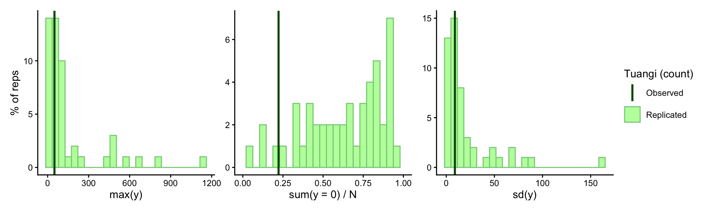
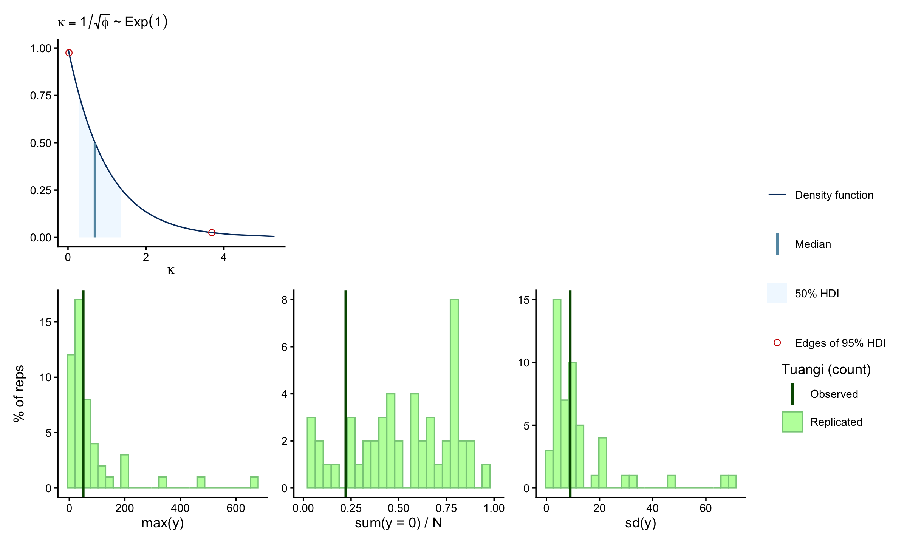
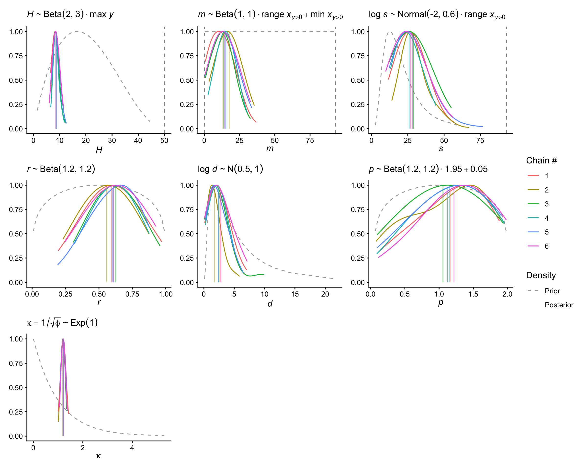
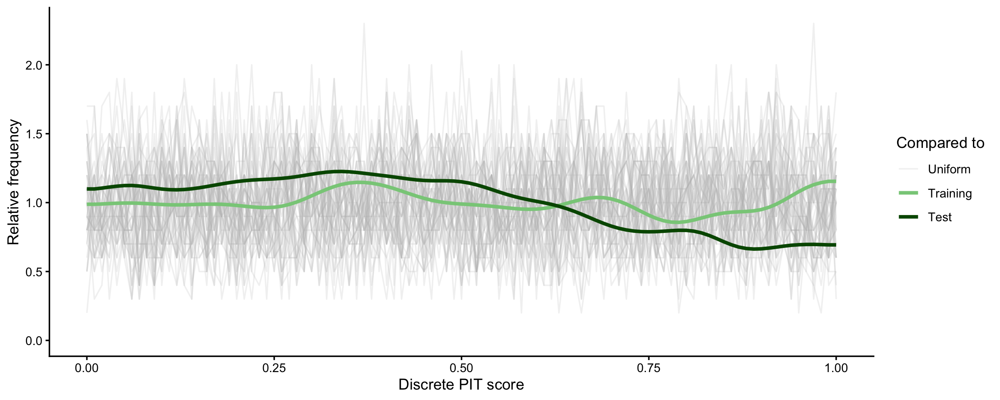
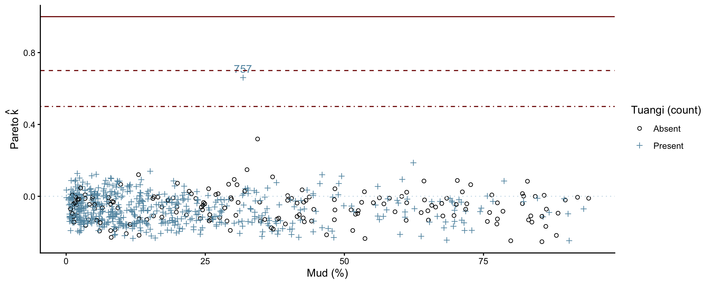
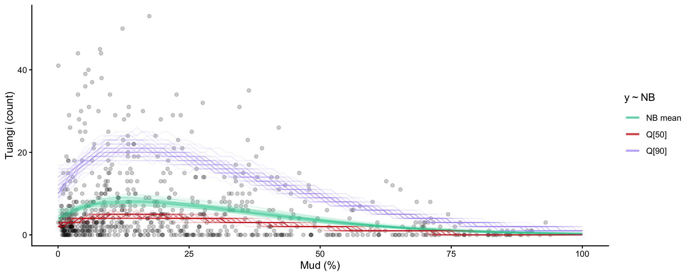
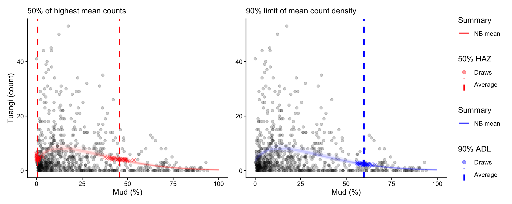

Getting started
getting-started.RmdOverview
This vignette presents a minimal Bayesian workflow for modelling the
distribution of discrete species abundance,
,
along an environmental gradient,
,
using the modskurt function to predict mean abundance,
.
The diagram below outlines key steps for an informative and trustworthy
analysis using the modskurt package, and also provides a
layout for the rest of this vignette. If at any stage you find yourself
needing more information, please check out the references and other
resources on this web page.

Load packages and stan files
This section assumes you’ve already got modskurt
installed and running, if not, jump over to this packages’ home page.
# compile_stanmodels only runs when needed, so it doesn't hurt to keep these
# lines together in any analysis
library(modskurt)
compile_stanmodels()## [1] "Compiling now: discrete.stan"Case study - Tuangi vs. mud
To illustrate the modskurt workflow, we’ll analyse the
distribution of tuangi (Austrovenus stutchburyi, the New
Zealand cockle - more
info) counts along a gradient of estuarine sediment mud
concentrations (from 0% no muddy sediment to 100% completely mud
dominated - more
info). Key variables are:
-
countthe number of individual tuangi recorded in a 250g composite sediment core. -
mud_pctthe percentage of sediment particles in the core that are less than 0.063mm in diameter
data(tuangi)
tuangi## # A tibble: 764 × 11
## year lon lat count mud_pct tn_conc toc_pct tp_conc sst_min sst_avg
## <chr> <dbl> <dbl> <dbl> <dbl> <dbl> <dbl> <dbl> <dbl> <dbl>
## 1 2017 175. -40.5 0 19.8 250 0.32 380 12.8 15.3
## 2 2018 175. -40.5 1 26.7 500 0.3 380 12.9 15.6
## 3 2017 175. -40.5 0 20 250 0.29 370 12.8 15.3
## 4 2018 175. -40.5 0 23.3 250 0.24 360 12.9 15.6
## 5 2017 175. -40.5 1 17.2 250 0.28 350 12.8 15.3
## 6 2018 175. -40.5 0 19.9 250 0.21 330 12.9 15.6
## 7 2017 175. -40.5 0 26.9 250 0.28 380 12.8 15.3
## 8 2018 175. -40.5 0 44.1 500 0.39 420 12.9 15.6
## 9 2017 175. -40.5 0 22.5 250 0.26 380 12.8 15.3
## 10 2018 175. -40.5 0 34.8 250 0.34 390 12.9 15.6
## # ℹ 754 more rows
## # ℹ 1 more variable: sst_max <dbl>For attribution and technical details of how these data are collected, please contact Salt Ecology.
A. Specify initial model
The first step in the analysis of a species’ abundance over an environmental gradient is to specify the distribution model. In general for discrete abundance data like these, we recommend first trying a negative binomial (NB) regression, however there may be some cases, particularly for rare and hard to sample species, where it might be worth going straight for a zero-inflated negative binomial linked (ZINBL) extension – see the ZINBL article for an example.
Given the negative binomial distribution of abundance,
,
the modskurt package specifies that the mean of the
negative binomial distribution (or expected abundance
)
is a non-linear function,
of the environmental gradient,
,
mud content in this case. Yielding the following generalised non-linear
regression model (GNLM):
where subscript, , denotes the th sample of abundance and environmental gradient, and is an overdispersion parameter that models the variation of abundance relative to mean abundance.
The modskurt function, , is visually unappealing, but (believe us!) it produces appealing and realistic shapes of mean abundance along environmental gradients:
with parameters:
- : the strictly positive maximum height of the curve; the peak in mean abundance along the environmental gradient.
- : the environmental location of peak mean abundance.
- : scales the width of the curve, describing how abundance decreases away from .
- : accounts for asymmetry, with indicating equal abundance in environmental conditions either side of , below indicating more abundance below , and above indicating more abundance above .
- : controls the peakedness () or broadness (, e.g. plateau-like shape) of the peak in mean abundance around .
- : persists higher-levels of abundance in relatively extreme conditions; this is a similar effect to increasing the tail weight of a distribution function.
The effect of each parameter is best described visually, so please check out this Observable if you haven’t already and toggle through different parameter values. Not all of these parameters are necessary for every analysis, but that discussion is best illustrated in a future example.
Being a Bayesian model, we get to determine what values of each
parameter are realistic given the relationship we wish to model, rather
than whatever potentially unrealistic value fits the data best. This is
a huge benefit of Bayesian modelling, but also a huge hurdle when
dealing with complex parameter spaces like that of the model above. To
make life easier, the modskurt package suggests some
default priors that should just work 🤞:
However, we still need to check these in each and every model and will be provide guidance on how to do this in section B.
Now finally, to specify this model in R, we use the mskt_spec
function:
spec <-
mskt_spec(data = tuangi,
# response and gradients (optional names for tidier outputs)
y = c('Tuangi (count)' = 'count'),
x = c('Mud (%)' = 'mud_pct'),
# distribution of abundance
dist = 'nb',
# additional mean shape parameters to model, Hms are always required
shape = 'rdp',
# make predictions for every 1% of mud content
pred_grid = 0:100,
# check prior and initial fit on a subset of data
subset_prop = 0.3)The last argument, subset_prop = 0.3, defines the
proportion of data that will be used for the subset “fail fast” model in
section C later on.
We can print the model spec and defaults for interest,
hp_ refers to the hyperparameter values that define the
priors above.
str(spec)## List of 21
## $ sample_prior: int 0
## $ hp_H : num [1:2] 2 3
## $ hp_m : num [1:2] 1 1
## $ hp_s : num [1:2] -2 0.6
## $ hp_r : num [1:2] 1.2 1.2
## $ hp_d : num [1:2] 0.5 1
## $ hp_p : num [1:2] 1.2 1.2
## $ use_r : int 1
## $ fix_r : num 0.5
## $ use_d : int 1
## $ fix_d : num 0
## $ use_p : int 1
## $ fix_p : num 1
## $ use_zi : int 0
## $ hp_kap : num 0.5
## $ hp_g0 : num [1:2] 3 1.5
## $ hp_g1 : num 5
## $ Nrep : int 101
## $ xrep : int [1:101] 0 1 2 3 4 5 6 7 8 9 ...
## $ subset :function ()
## $ full :function (prop = 1, seed = NULL)
## - attr(*, "pars")= chr [1:7] "H" "m" "s" "r" ...
## - attr(*, "nms")=List of 3
## ..$ y : chr "Tuangi (count)"
## ..$ x : chr "Mud (%)"
## ..$ eff: NULL
## - attr(*, "dist")= chr "nb"
## - attr(*, "shape")= chr "rdp"
## - attr(*, "class")= chr [1:2] "mskt-spec" "list"B. Verify initial model specification
This step helps in a few key ways
- Provide greater transparency on the model assumptions and greater understanding of the model mechanics,
- Verify that the model only predicts results that make sense to the best of our ecological knowledge, i.e. we give no weight to illogical parameter values, and thus estimate better measures of uncertainty.
- Verify that the model predicts all results that might make sense, i.e. the prior distributions are not overly constraining the parameter space and biasing results/uncertainty away from potentially realistic outcomes.
The modskurt provides four checking functions:
-
check_prior_dens: Plot the marginal prior densities and check their probabilities align with reasonable values. -
check_prior_mskt: Randomly sample from the joint prior and check that predictions for the mean, , contain all possible shapes and sizes. -
check_prior_dist: Simulate replicates from the joint prior model and plot “severe tests” to check for overdispersion misspecification. -
check_prior_zero: Predict rates of zero-inflation given the mean and check for believable relationships – more on this here
Prior probabilities of parameter values
If you tweaked the default hyperparameters above, then you’ll want to check they produce the correct marginal prior distribution here:
check_prior_dens(spec)
Prior predictions for the modskurt mean
The default assumption of prior mean shapes look like a pile of
spaghetti, if you have information on any of the mean shapes you might
expect, then check they are reasonably covered here and that impossible
shapes are excluded, or at least weighted very heavily away from. We
highly recommend utilising this modskurt prior specification
tool provided with the package for adjusting and verifying the model
priors in real time.
check_prior_mskt(spec)
Line opacity shows the prior probability of jointly observing the parameters that predict that shape
Prior predictions for summary statistics of y
Severe tests for the specified distribution of are useful to check that the combination of mean shapes and overdisperion parameter, , for
- Maximum observable counts: too much dispersion can produce counts that might be unrealistic or even impossible given the sampling design.
- Proportions of zeros: too much dispersion can also inflate the proportion of zeros beyond what might be credible, and cause underestimation of mean counts.
- Variation of abundance: too little dispersion (the Poisson effect) can restrict the model into overestimating mean counts in order to try and capture zero proportions or higher counts.
Similar to above, we have a another highly recommend tool for
checking and setting distribution priors on the ZINBL prior specification
page.
check_prior_dist(spec)
In the middle subplot of the figure above, it looks maybe there are a little too many zeros for this model? Tuangi are pretty common and it’d be highly unlikely to not find a few somewhere along the mud gradient. The maximum count predictions are quite high as well, counting more than 1500 tuangi in a single 250g sediment core would be quite a feat (unless they are all tiny juveniles perhaps).
Lets tweak the rate hyperparameter for the exponentially distributed overdispersion parameter, , slightly to encourage smaller values of overdispersion:
spec$hp_kap <- 1
check_prior_dens(spec, 'kap') +
check_prior_dist(spec) +
plot_layout(design = 'A##\nBBB')
A little better, and a little is fine, remember the prior model should fit knowledge of the tuangi-mud relationship, not specific data realisations of it.
OPTIONAL: this whole section is an iterative process, take some time and care here to make sure you are happy with the assumptions being specified in your model.
C. Fit subset model
The prior model looked okay, so it is time to consider the posterior. The idea of this subset model section is to “fail fast”. That is, if we missed any model misspecifications above, then instead of wasting your time and computer resources fitting a full model right off the bat, we can first fit a very quick approximate model that uses a subset of the data and minimal posterior samples over maximal chains. Each chain will roughly estimate the posterior for the subset of data, and hopefully identify any issues with any likelihood degeneracies (multimodality being a large concern for this highly parametrised model).
fit_subset <-
mskt_fit(spec,
# use the subset only
use_subset = TRUE,
iter_warmup = 200,
iter_sampling = 100,
chains = 6,
parallel_chains = 6,
# for testing
show_messages = TRUE, show_exceptions = TRUE)Check the computation diagnostics and refer to this excellent article on diagnosing Stan runtime problems.
check_computation(fit_subset)## spec: nb[Hmsrdp] using 229 obs out of 762 (30% sample)
## post: 6 chains each with 100 draws (600 total)## $summary
## # A tibble: 7 × 10
## variable mean median sd mad q5 q95 rhat ess_bulk ess_tail
## <chr> <dbl> <dbl> <dbl> <dbl> <dbl> <dbl> <rhat> <ess> <ess>
## 1 H 8.60 8.41 1.08 0.949 7.05 10.5 1.02 356 (0.6) 389 (0.6)
## 2 m 13.8 13.9 7.29 7.57 1.95 25.6 1.06 120 (0.2) 260 (0.4)
## 3 s 26.8 25.8 9.57 8.83 13.9 43.8 1.04 153 (0.3) 167 (0.3)
## 4 r 0.607 0.613 0.167 0.184 0.337 0.867 1.01 296 (0.5) 292 (0.5)
## 5 d 2.34 1.98 1.63 1.44 0.470 5.44 1.04 143 (0.2) 219 (0.4)
## 6 p 1.16 1.23 0.519 0.592 0.231 1.88 1.00 331 (0.6) 295 (0.5)
## 7 kap 1.21 1.20 0.0682 0.0715 1.10 1.32 1.01 609 (1.0) 469 (0.8)
##
## $diagnostics
## chain_id warmup sampling total num_divergent num_max_treedepth ebfmi
## 1 1 0.616 0.238 0.854 0 0 0.7933216
## 2 2 0.711 0.253 0.964 0 0 1.3040569
## 3 3 0.605 0.257 0.862 2 0 0.8282423
## 4 4 0.630 0.223 0.853 0 0 1.1865072
## 5 5 0.691 0.264 0.955 0 0 1.1901225
## 6 6 0.640 0.295 0.935 0 0 0.8617386OPTIONAL: refine the model specification or sampling settings.
Check subset model
The model computation showed no reason for concern, so now we can look at marginal posterior distributions for each chain of samples:
# visual display of chain mixing and prior-data conflicts
check_post_dens(fit_subset, by_chain = TRUE)
Given that each chain appears to find similar posterior solutions that do not dramatically contradict the prior information, we can be confident that the model is well specified for now.
Withholding data from the model computation also allows us to test
the predictive calibration of the posterior. Calibration refers to the
distance between the empirical distribution of the withheld DAEG data
and the posterior predictive distribution estimated from the training
data. For these discrete zinbl abundance distributions, we
use the randomised probability integral transformation (PIT) test of Czado,
C., Gneiting, T. and Held, L., (2009).
# uses test set for discrete pit
check_post_calibration(fit_subset)
For a model that accurately predicts new data, these PIT scores should be uniformly distributed, and given that the PIT scores for the posterior predictions of test data are well within the range of the random uniform samples, we can be confident for now that the predictive capability of the model is well calibrated.
OPTIONAL: this is your last chance to make sure you are happy with model assumptions and the samplers ability to compute them.
D. Fit full model
Time for comprehensive Bayesian inference, using the full dataset and a large number of posterior samples.
fit_full <-
mskt_fit(spec,
chains = 4,
parallel_chains = 4,
# for testing
show_messages = TRUE, show_exceptions = TRUE)Check computation again, and compare to above.
check_computation(fit_full)## spec: nb[Hmsrdp] using 762 obs out of 762 (100% sample)
## post: 4 chains each with 1000 draws (4000 total)## $summary
## # A tibble: 7 × 10
## variable mean median sd mad q5 q95 rhat ess_bulk ess_tail
## <chr> <dbl> <dbl> <dbl> <dbl> <dbl> <dbl> <rha> <ess> <ess>
## 1 H 8.23 8.21 0.640 0.629 7.23 9.34 1 2170 (0.5) 2477 (0.6)
## 2 m 14.2 14.1 2.82 2.66 9.82 19.0 1 1472 (0.4) 1249 (0.3)
## 3 s 22.9 22.5 5.57 5.59 14.5 32.2 1 1353 (0.3) 1878 (0.5)
## 4 r 0.769 0.788 0.0960 0.0810 0.582 0.890 1 1471 (0.4) 1447 (0.4)
## 5 d 1.54 1.35 0.926 0.834 0.403 3.33 1 1408 (0.4) 1867 (0.5)
## 6 p 1.20 1.23 0.465 0.538 0.384 1.89 1 2585 (0.6) 2406 (0.6)
## 7 kap 1.19 1.19 0.0374 0.0382 1.13 1.25 1 3183 (0.8) 2534 (0.6)
##
## $diagnostics
## chain_id warmup sampling total num_divergent num_max_treedepth ebfmi
## 1 1 6.367 7.450 13.817 0 0 0.9644336
## 2 2 6.369 6.675 13.044 0 0 0.9802058
## 3 3 6.119 6.577 12.696 0 0 0.7850348
## 4 4 6.299 6.770 13.069 0 0 0.9579974OPTIONAL:
Check full model
Given the subset model appeared to be adequately specified, and the
computation diagnostics of the full model improved, we shouldn’t need to
do too many more checks here. To be thorough it wouldn’t hurt to run
through check_post_dens,
check_post_dist,
check_post_zero,
check_post_calibration,
but for this getting started vignette we will just show one additional
check.
Now that our posterior is estimated over the entire data set, we want to make sure that the subset of data used earlier was a reasonable representation of our full dataset. A useful check for this is to consider the influence each data point has on the posterior. This is somewhat similar to checking a linear regression residual plot, are there data points that the model couldn’t predict very well, and is it because those data points are really unusual, or because our model is misspecified and the subset model checks didn’t pick it up.
check_post_influencers(fit_full)## pareto_khat Tuangi (count) Mud (%)
## 757 0.66 2 32
The model only struggled to predict one point, and the console printout shows that there was nothing unusual about that point (count = 2, mud % = 31.8) so it is safe to ignore. Later plots suggest that maybe around 30-34% mud content the data is not as dispersed as the rest, and would likely clear up as more data is collected.
OPTIONAL: refine model spec or fit parameters. In some cases, the posterior model could be well specified but simply hard to estimate, and refining the computation may be necessary to determine this. Refinements could include adjusting the length of the warmup period, or tuning algorithm parameters such as the size of steps used to explore the posterior curvature.
E. Use the model
Now we can look at some predictions of specific interest:
- What does the distribution of tuangi over mud concentrations look like, and
- What ranges of mud concentrations correlate with higher abundances of tuangi.
Plot summaries of the abundance distribution
This is the complete distribution, choose any summaries that are the most informative for your analysis.
# plot the distribution of abundance along the gradient
abundance_dist(fit_full, summaries = c('mean', 'median', 'q90'))
Calculate ranges of x for different percentages of abundance measures
Going back to our original question, what ranges of mud concentrations are tuangi most abundant in? There’s two useful ways to look at this, we could:
- Calculate a range of mud concentrations that correspond to the highest levels of predicted tuangi abundance (high-abundance-zone, HAZ), or
- Determine a limit of mud concentration beyond which less than a certain level of predicted total tuangi abundance resides (abundance-density-limit, ADL).
Loosely speaking we could interpret these ranges as,
- HAZ: mud concentrations that are more optimal for tuangi (or correspond to other optimal environmental conditions)
- ADL: a line in the sand (or mud) where we expect to find a proportion of the total population being sampled.
Other important arguments are capture_pct and
based_on, where we decide what percent of abundance (high
zone or density) the range will capture, and which distribution summary
the range and percent are based on. For example
-
based_on = 'mean'use the predicted modskurt mean abundance. -
based_on = 'q90'use the 0.9 probability quantile of predicted abundance.
The choice of summary and capture percentages will depend on the
question being answered. For these data we might start by looking at the
range of mud concentrations where we expect to find 50% of the highest
average tuangi counts, so capture_pct = 50%
using_range = 'HAZ' based_on = 'mean' tuangi
counts (the left hand red plot). And the upper limit of mud
concentrations beyond which there is less than
capture_pct = 10% of predicted tuangi density
(using_range = 'ADL') based_on = 'mean'
predicted counts.
# compose in row using patchwork
(abundance_range(fit_full,
capture_pct = 50,
using_range = 'HAZ',
based_on = 'mean',
plotted = TRUE,
range_colour = 'red') +
labs(subtitle = '50% of highest mean counts')) +
(abundance_range(fit_full,
capture_pct = 90,
using_range = 'ADL',
based_on = 'mean',
# specify left or right side limit
region = 'left',
plotted = TRUE,
range_colour = 'blue') +
labs(y = NULL, subtitle = '90% limit of mean count density')) +
plot_layout(guides = 'collect')##
## Species range (see x.avg row) calculated as the region of x where the NB mean abundance (NB mean) is within 50% of the highest value of NB mean along x (averaged across posterior draws):
## left centre right
## mean.avg 4.69006033 8.27600241 4.15045999
## mean.se 0.09993937 0.09603441 0.04807493
## x.avg 0.53352593 13.62000000 45.55078329
## x.se 0.09697448 0.35558517 0.52709780
##
## Species range (see x.avg row) calculated as the smallest region of x where the density of NB mean abundance (NB mean) is equal to 90% of the total density of NB mean along x (averaged across posterior draws):
## left centre right
## mean.avg 4.3363897 7.2081581 2.34696538
## mean.se 0.1335607 0.0801483 0.03973593
## x.avg 0.0000000 25.6444897 59.76365417
## x.se 0.0000000 0.1748294 0.33998849
The console printout shows that sediment with between about 0% and 46% mud content has average tuangi counts within half (50%) of their peak average counts.
Compare those numbers with the abundance density limit that suggest 90% of predicted total mean tuangi abundance is found in sediment with less than 60.7% mud content.
Summary
This case study lightly stepped through the core steps in the
modskurt analysis of species abundance over environmental
gradients. There are many more checks that can be performed throughout,
and a whole raft of troubleshooting exercises for when your data doesn’t
play as nicely as these tuangi abundances did. Have a look through the
other articles if interested: